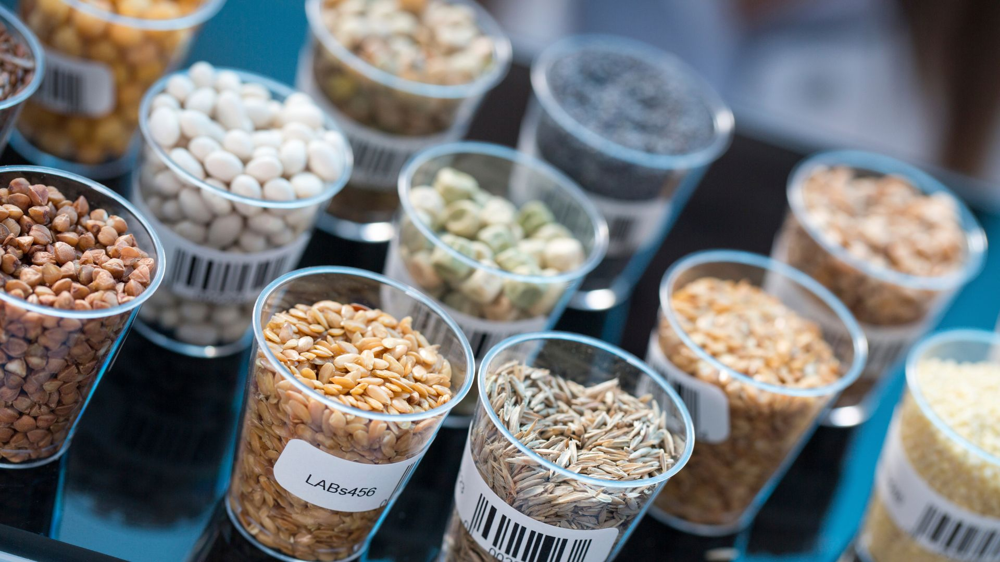

Selective sourcing opportunities across food, ingredients, and agro-industrial supply environments in Latin America.
Latin America offers relevant sourcing opportunities in selected food, ingredients, and agro-industrial flows.
This universe is approached selectively and with sourcing-office discipline. For institutional buyers, the opportunity lies in identifying supply relationships that can be assessed, coordinated, and supported in line with program requirements.

The opportunity landscape
- selected product and ingredient flows
- manufacturer qualification needs
- documentation and compliance fit
- operational and commercial suitability
- long-term supply continuity
For buyers in this universe, the central question is not simply availability. It is whether the supplier relationship can be built on the right documentation, the right fit, and the right execution conditions.
How Index-IBL supports buyers in this universe
In this category universe, qualification discipline is especially important.
- identification of suitable manufacturers
- structured supplier qualification
- documentation and requirement review
- compliance-oriented coordination
- operational and commercial suitability assessment
- production and supply follow-up
- support for long-term sourcing reliability
This helps buyers approach selective opportunities in a more structured and dependable way.
Why this universe requires a selective approach
Food, ingredients, and agro-industrial sourcing often depends on confidence around:
- supplier suitability
- documentation quality
- compliance alignment
- operational consistency
- commercial fit
- long-term reliability
That is why Index-IBL approaches this universe with a selective, qualification-sensitive logic rather than a broad market-facing one.
Sourcing-office discipline in this category
Index-IBL’s role in this category universe is to help buyers move from general interest toward more disciplined sourcing assessment and manufacturer coordination.
- supplier qualification
- sourcing governance aligned with buyer requirements
- commercially and operationally suitable supplier selection
- coordinated execution and follow-up
- reliability over time
Commercially useful, carefully framed
This category universe is presented to help qualified buyers recognize where relevant sourcing opportunities may exist and where disciplined support can make the opportunity more viable.
The emphasis remains on suitability, control, and reliability rather than broad market exposure.
Discuss opportunities in Food, Ingredients & Agro-Industrial Supply
If your company is evaluating selective sourcing opportunities in this universe, Index-IBL is available to discuss qualification requirements, sourcing fit, and next-step possibilities.